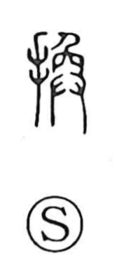

換

Kun: kaeru, kawaru | On: kan
to change ・ to exchange ・ to replace
Explanation
A phono-semantic character: the hand element signals a manual act, while the phonetic 奐 (kan) portrays a person lifting a newborn from between an animal’s parted thighs—a vivid scene of birth and fresh life. Drawing on this image of emergence and renewal, 換 expresses replacing or changing—bringing the new in place of the old. This sense underlies readings like kaeru and kawaru, and is neatly encapsulated in the idiom 換骨奪胎, which means to rework something old into something new.